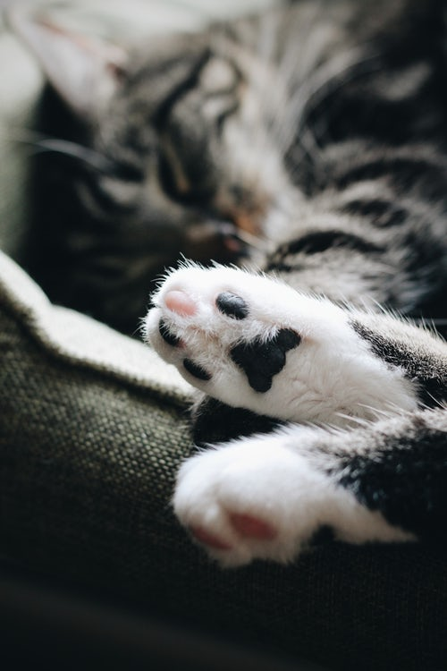

고양이(cat)는 식육목 고양이과에 속하는 포유류 동물이다. 일반적으로 "고양이"라 함은 인간에게 길들여진 집고양이(domestic cat)를 말한다. 들고양이(wild cat)는 약 10만 년에서 7만 년 전부터 존재했다. 2007년 기준으로 최근의 연구에 따르면 길들여진 고양이의 기원은 약 1만 년 전 근동지방에서 스스로 숲 속을 나와 사람들이 모여사는 마을에 대담하게 정착하여 길들여진 5마리 정도의 아프리카들고양이(Felis silvestris lybica)로 추측된다.
